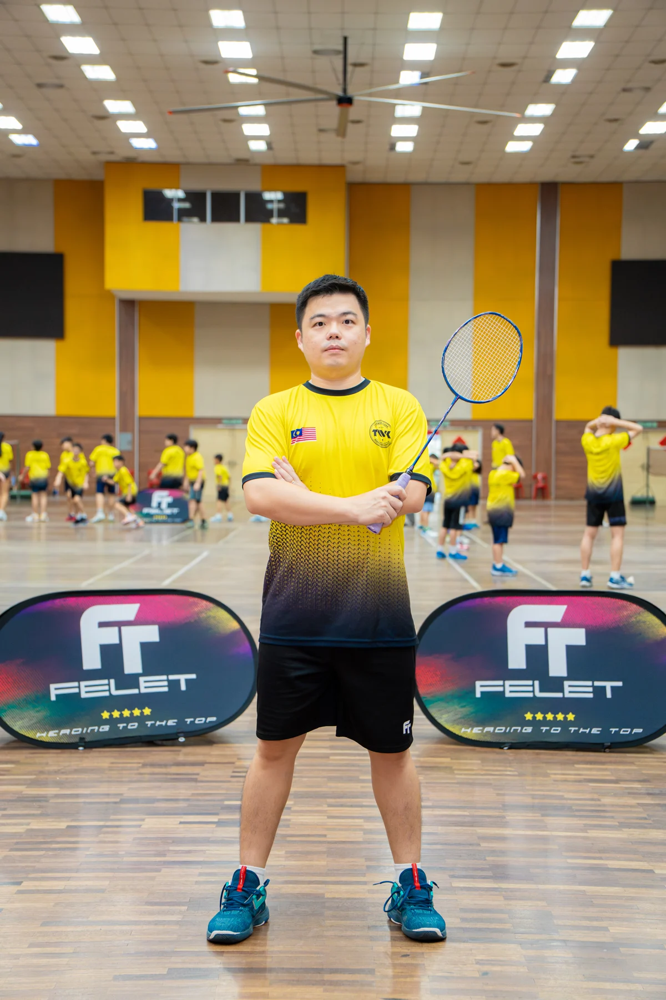

Head coach
Tan Wee Tat
- Former BAM men’s doubles player and former BJSS player.
- BAM Level 1 certified coach.
- Managed Tawau Badminton Academy from 2012, with more than 10 years of coaching experience.
- Professional men’s doubles coach for the Shanxi team in China.
- 2015 Bahrain International Series — champion.
- 2012 SUKMA Games — bronze medal; team event — silver medal.
- 2009 World Junior mixed team — silver medal.
- 2009 Asian Junior team event — silver medal.